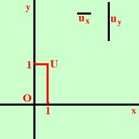

|
 Si ha un sistema bimetrico quando la misura per l'unita' sull'asse x e' diversa da quella sull'asse delle y. Si usa molto per le rappresentazioni in statistica. Il sistema con la stessa unita' di misura per l'asse x e l'asse y sara' invece detto monometrico |